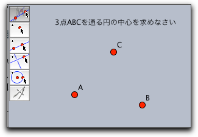

動的な幾何学
ここでは、平面幾何のプログラムとして(スクリプトとシミュレーションは除外して)シンデレラ２を使う方法を簡単に述べます。特に、シンデレラの利用が有利であるようないくつかの例を示します。
使用例
シンデレラの応用領域は、物理学（たとえば光学)による純粋ユークリッド幾何学および非ユークリッド幾何学から計算運動学とコンピュータ設計（CAD）までひろがります。以下の例で、シンデレラを用いた有益な場面を示します。
正確な図面
いくつかの図面を必要とする科学の出版物を書いているとしましょう。図を描く必要があるとき、最初から完璧な図を描くことはほとんど不可能です。
 |
| 三角形のオイラー線 |
ほとんど同じ場所に多くの要素を描かなければならなかったり、図の一部がページにうまくレイアウトできなかったりするでしょう。
シンデレラで、コンピュータ上に簡単な図を描くことから始めましょう。これは、あなたが期待している最終的な図とは違って見えるかもしれません。しかし、それは作図のためのすべてのものを含んでいます。簡単な図ができたら、あなたの思い描くものになるまで、必要な要素を選んだり、それらを動かしたりします。動かしている間にうまく描けたものができるでしょう。最後に、インスペクタを使って、要素の色や大きさを調整します。
幾何学的な計算機
幾何学的なことで何かしら面白そうなことを感じるということがよくあります。幾何学の本で面白いものを読んだり、あなた自身が新しいことを思いついたりすることがあるでしょう。
そうしたら、シンデレラで図を描いて遊び始めましょう。幾何学的な探査を通して新しいことに気付き、隠れた特性が明らかになるでしょう。シンデレラは 数学的に一貫した機能を実装しているので、変な効果が起こったりすることはありません。
 |
| ４節リンク機構の動き |
あなたが他の同僚にあなたの研究を伝えたいときは、あなたはインタラクティブなウェブページをつくって、それをインターネットで利用可能にすることができます。そうすれば、あなたの同僚はJAVAが使えるブラウザで即座にアクセスして、その場で見ることができます。
学生用の練習問題
もう一つの面白い応用は、学生用のインタラクティブな練習問題作成です。あなたが定規とコンパスだけを使って、三角形の外心を作図する方法を学生に教えたいと想像してください。まず、あなたは自分でその図を作ります。それから、「要素を入力する」をマークし、問題文を書き、「作図の中間ステップ」と「作図完了」をマークして練習問題を作ります。 シンデレラ は、定規とコンパスで作図するための道具と、入力要素(おそらく、学生が描き始めるための三角形)を提示するインタラクティブなウェブページを作ります。
学生は自分のコンピュータを使って、自力で、あるいはあなたが用意したヒントを使って問題を解くことができます。学生が問題を解くためにどんな作図をしても大丈夫です。シンデレラの統合的な自動定理チェック機能で正誤を決められます。解答を発見するための学生の想像力は、プログラムによって制限されることはありません。
 |
| 学生用練習問題 |
設計と特徴
シンデレラを開発するとき、いくつかの大きな設計目標がありました。プログラムの全体的な構造についての印象を持ってもらうために３つの重要な事柄について述べます。
全般的なアプローチ
シンデレラ は、幅広い幾何学分野をカバーするように設計されました。プログラムは、ユークリッド幾何, 双曲幾何, 楕円幾何, そして 射影幾何を直接サポートします。
これは、双曲幾何学をシミュレートするために、複雑なユークリッド幾何の作図をする必要がないことを意味します。シンデレラの「双曲幾何モード」を使えば、図は双曲平面上の要素のように振る舞います。
シンデレラ は、一般的な数学のアプローチによって、上記のすべての領域のために共通の背景を形成しています。シンデレラ の数学的背景は、１９世紀の偉大な、しかしほとんど忘れられてしまったような数学者の業績によっています。何人かの人に言及しましょう。 : モンジュ と ポンスレ は、射影幾何学を考案しました。 プリュッカー と グラスマン、 ケーリー、 メビウス は射影幾何学に対処するために美しい代数言語を開発しました。 ガウス、 ボヤイ、 ロバチェフスキー は、今日双曲幾何学と呼ばれる幾何学を「発見」しました。最後に、 クライン、 ケーリー、 ポアンカレ は、射影幾何学と複素数に関してユークリッド幾何学と非ユークリッド幾何学を統一的に説明しました。19世紀の幾何学の歴史の発展について書かれた面白い本として、 ヤグロムの本を推薦します。さらに、フェリックス・クラインによる歴史の本 Kl1 は、この話題への非常に面白い入門書です。
 |
| 同じ大きさの双曲面の円 |
射影幾何学 は シンデレラ の幾何学の背景となっており、 ケーリー・クライン幾何学 はシンデレラの計量の骨格となっています。
数学的な一貫性
もののたとえですが、 「シンデレラで作図した幾何学の図形は、合理的な幾何学の宇宙に住んでいるようなものです。この宇宙では、不自然なことな起こらないのです。」
 |
| ＣＡＤシステムに挑戦した 放物線の描く曲線 |
インタラクティブ幾何学のための他のシステムは、数学的な矛盾で苦しんでいます。作図をして、基本的な要素をドラッグしたときに、図の一部が突然他のところに飛んだりします。これは変数を使うCADでは残念ながらよくあることです。
シンデレラ は新しい理論を用いて完全にこの問題を解決しました。 複素解析 の手法を用い、古典的な幾何学と統合したのです。
この理論に基づいて、シンデレラが自分自身をチェックする自動定理証明機能を身に付けました。この定理証明機能が、学生用の練習問題において、自動フィードバック機能として使われています。このアプローチのもう一つの利点は正確な描画と、代数的な曲線の一部としての幾何学的軌跡を描くための道具を持ったことです。
モジュールとしての設計
シンデレラ は、可能な限りモジュール形式になっています。いろいろな方向に拡張ができるようになっているのです。
 |  | |
| ユークリッド平面でのコンコイド曲線と… | その球面表示 | |
現在の版でも、モジュール化の利点があります。たとえば、 同じ図形を多くの幾何学で同時に見ることができます。双曲幾何学でのポアンカレモデルやベルトラミークラインモデルにおいて、双曲幾何学の図形は同時に表示でき、操作することもできます。 異なる表示画面を同時に使えば状況がより深く理解できます。たとえば、図形の「無限遠点」のふるまいは球面表示にすればよくわかります。
変換と変換群
シンデレラはあらゆる幾何変換（鏡像、平行移動、回転、射影変換、メビウス変換）を強力にサポートしています。変換はいろいろな場面で使われます。
射影変換は、３次元の図形の透視図を正確に描くために有効なツールです。さらに、シンデレラはいくつかの変換によって作られる変換群を構成する機能を提供します。
 |
| 模様の透視図 |
たとえば上の図は、円に変換群をほどこし、透視図にしたものです。変換群は、正三角形の頂点の周りの60度回転を作り出します。
フラクタル
シンデレラはフラクタルを作るための簡単な方法も提供します。シンデレラで作ることのできるフラクタルは反復関数系と呼ばれるものです。それは幾何変換を使って作られます。反復関数系は、いわば変換で定義される自己相似形の「雲」です。シンデレラのインタラクティブな特徴を使って、フラクタルの世界を探索するユニークな実験的環境が作り出されます。
 |
| 簡単なフラクタル |
Page last modified on Saturday 03 of March, 2012 [00:04:39 UTC].
The original document is available at
http://doc.cinderella.de/tiki-index.php?page=A%20Dynamic%20Geometry%20ProgramJ